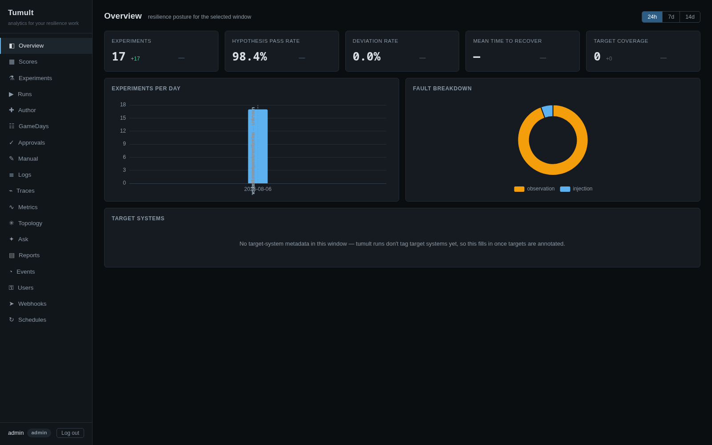
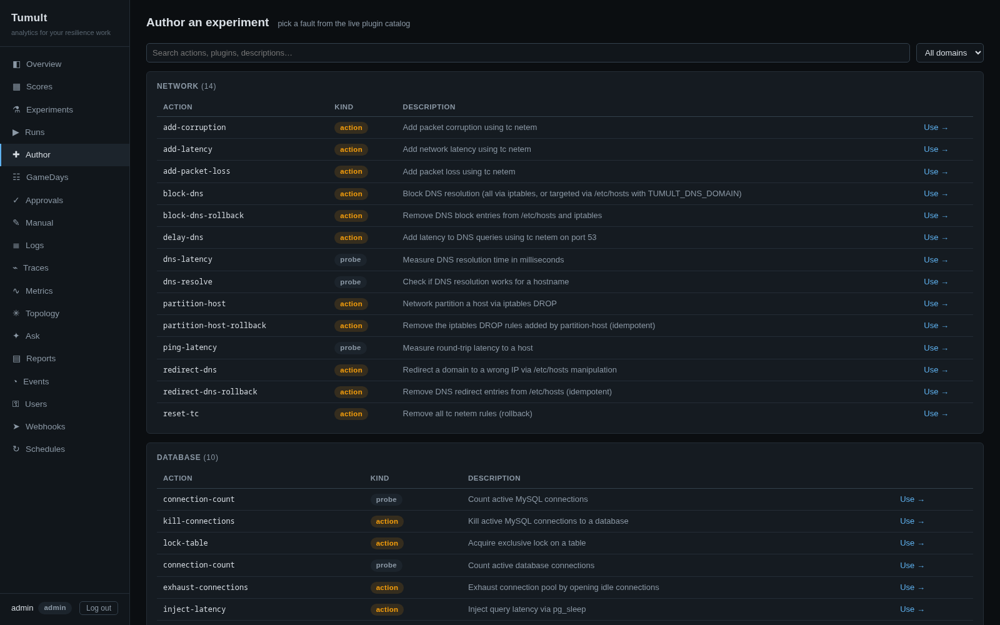
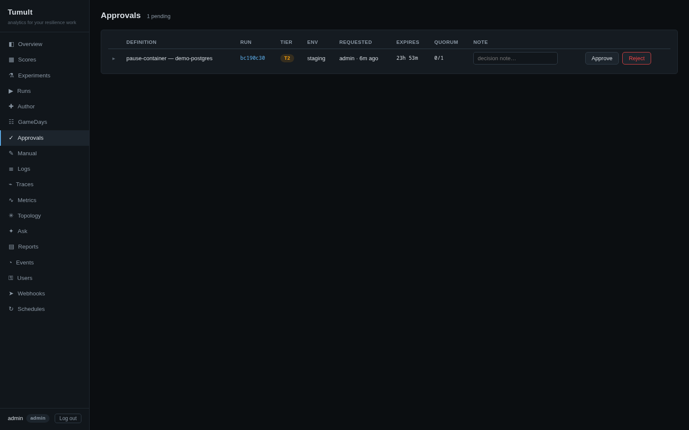
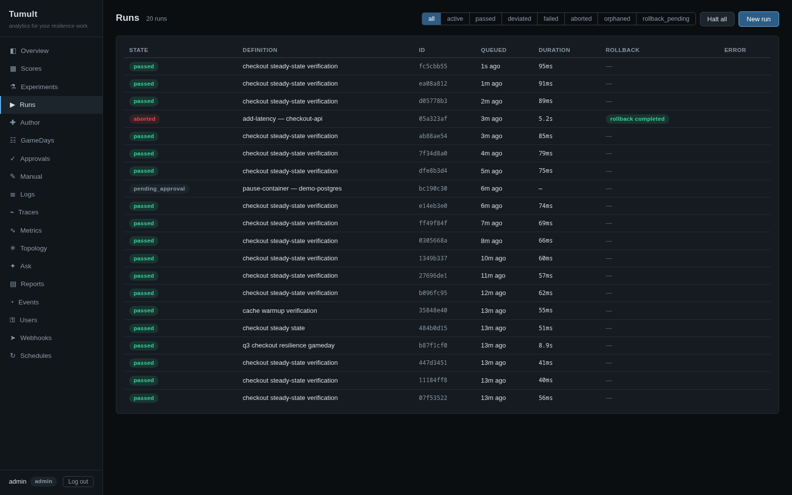
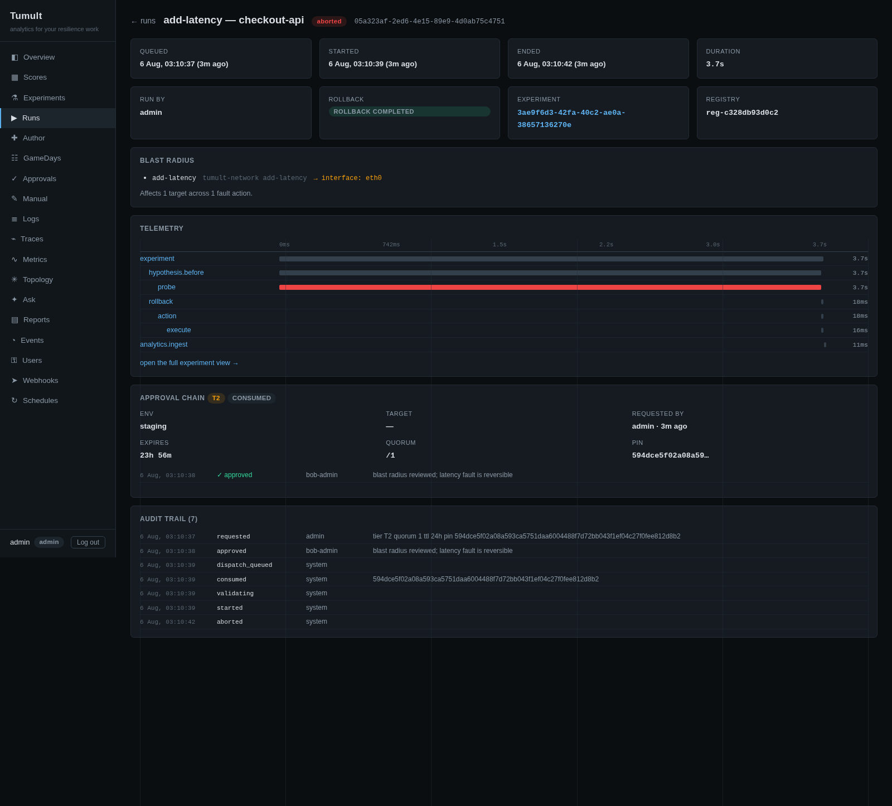
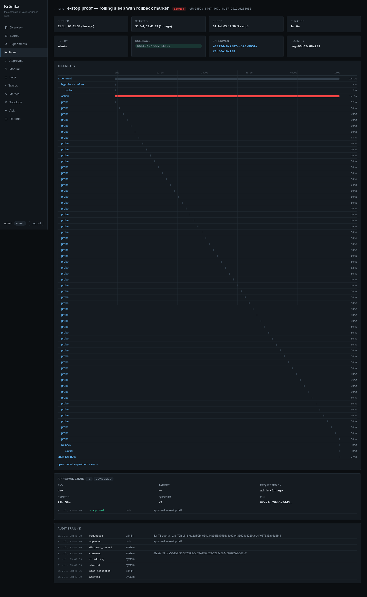
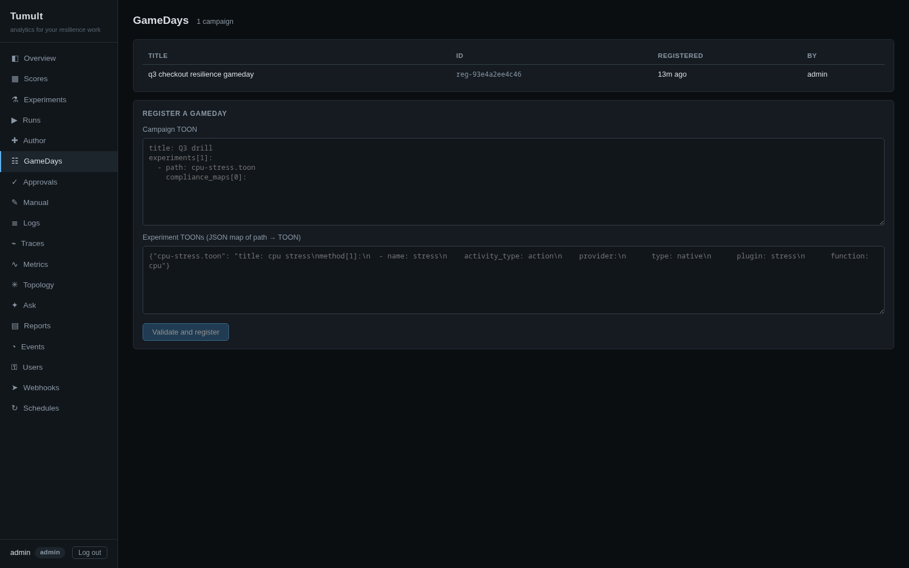
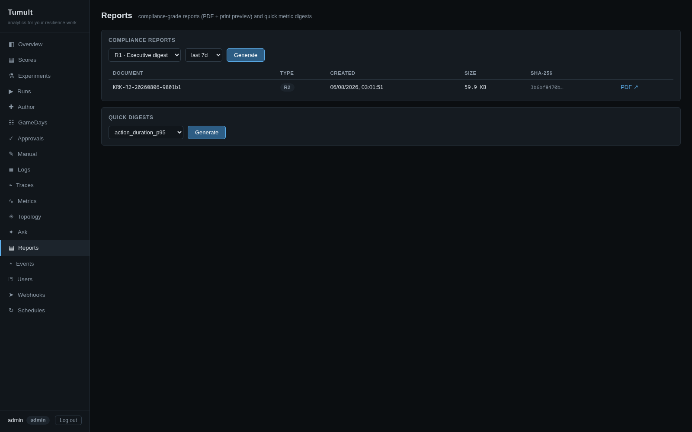

Architecture

Each piece does one job and hands off to the next. Chaos experiments are one evidence source among several.
Chaos experiments from the CLI, an MCP client or the daemon. Load profiles (ramp, spike, soak) on k6 and oha. Telemetry from any service that follows the OpenTelemetry naming contract. Entity events from a Collector, stored as entities with a lifetime (off by default). Manual records of game days, tabletops and failovers with a reviewed lifecycle.
Pick a fault from the live plugin catalog and the Author wizard scaffolds validated TOON — one click into a registered, runnable definition. Or write TOON by hand and run it from one static binary: 16 plugins, 91 chaos actions across PostgreSQL, MySQL, Redis, Kafka, Docker, Podman, Pumba network chaos, Kubernetes, SSH, and CPU/memory/IO stress. A definition names its discipline (chaos, load, performance, robustness, dr, security, nfr), its target and its objectives.
Every run is classified into a risk tier (T0–T3) at request time. Gated runs wait behind a hash-pinned, quorum- and TTL-bound approval with segregation of duties — the requester can never approve their own run. A two-step e-stop and a stop-all kill switch halt anything mid-method, and every action lands in a hash-chained, tamper-evident audit trail.
The daemon (tumultd) ingests traces, metrics, and logs around the clock over OTLP/gRPC, OTLP/HTTP and OTel-Arrow into an embedded DuckDB store — Kronika — behind a single writer, then serves the web UI from the same binary. KPIs, experiment history, log/trace/metric explorers, parquet export. Or just ask a question in plain language over the store. See observability setup.
A passive risk scan ranks findings and coverage gaps from the evidence already in the lake, with a continuous posture score per target. Scores roll up by org domain to the company root. The DORA coverage and maturity score shows coverage per article and business function, with unknown shown apart, and an internal 1 to 5 level per node. The score says what evidence exists; it does not say that an entity complies.
Each non-functional objective and recovery target gets a verdict from the run's measurements: met, breached or inconclusive. tumult gate turns a target's evidence into pass, warn or fail for a pipeline. Performance regression verdicts compare two service.versions of a target with a bootstrap confidence interval, and evidence too thin to tell is inconclusive.
Forecast bands for semantic metrics, and for each run the distance of every probe from its counterfactual and the time it took to come back. A built-in Holt-Winters provider needs no network and no model weights; a Timestral sidecar is optional. Every response names the model that produced the numbers.
The Star Map draws organisation units, ICT entities, systems, components, services, workloads and experiment definitions as one graph. Three lenses colour the same nodes by evidence, by risk and by telemetry conformance, and a node opens a drawer with its runs, gate verdict, objective verdicts, manual records and findings.
Map experiments to DORA (EU 2022/2554), NIS2, PCI-DSS 4.0, ISO 22301, ISO 27001, SOC 2, and Basel III via tumult compliance. R1 executive digests and R3 game-day reports sit on top of any run; the R2 evidence pack renders for DORA, NIS2, ISO 27001, and SOC 2 — PCI-DSS 4.0, ISO 22301, and Basel III are mapping-only. All as A4 PDFs with document control and hash-chain verification.
40 MCP tools over stdio or Streamable HTTP, with tool annotations, structured output schemas, and tumult:// resources. Any MCP-compatible agent can discover plugins, run experiments, query the analytics lake, and recommend what to test next — and Tumult can inject faults into agentic AI systems themselves. Over the API a risk finding can be turned into a registered experiment and an autopilot candidate.
Rust binaries embed the engine and analytics libraries. The daemon embeds the lake, schedulers and web UI in tumultd; the CLI is another binary. Selected providers need external tools, target permissions and, for TCP faults, the bundled proxy helper. Pre-built for macOS (x86_64/aarch64) and Linux (x86_64 gnu/musl, aarch64 musl).
Built-in instrumentation covers executed SSH, Kubernetes, plugin, analytics and MCP paths. Set an OTLP/gRPC endpoint to send the executed activities to Jaeger, SigNoz, or another compatible backend. Every binary writes structured logs: JSON on stderr with stable event names, bridged to OTLP.
Safe Rust across all 32 crates, with exactly two audited unsafe blocks for process-group kills. Zero production .unwrap(). Clippy pedantic enforced. cargo-audit on every commit.
Coordinated campaigns of experiments with shared load, resilience scoring, and compliance article mapping. One command: 4 experiments, DORA/NIS2 evidence, audit-ready journal.
Pre-built on GHCR — no Rust toolchain needed. docker pull ghcr.io/mwigge/tumult. Composable bundles: infra, observability, MCP server, agent fleet. Full e2e in one command.
OTel Collector (contrib) with OTLP + Arrow receivers, span-to-metrics APM, host metrics, Prometheus. Traces flow to SigNoz — dashboards, alerting, log aggregation. No custom build needed.
Compliance reports are evidence summaries, not legal or audit attestations.
Every screen below is the Tumult web UI on the seeded demo stack
(docker compose -f docker/docker-compose.kronika.yml up -d) —
from authoring to an approved, executed, e-stopped and reported run.
The full click path, and a list of every Krönika page with its charts and
the evidence behind them, is in the platform walkthrough.








Configured telemetry records the hypothesis, actions, probes and rollbacks that execute. Set OTEL_EXPORTER_OTLP_ENDPOINT and any required credentials to send traces to SigNoz, Jaeger, or another OTLP/gRPC backend.

One command to install. One compose file to see scores, verdicts and the Star Map on seeded evidence.